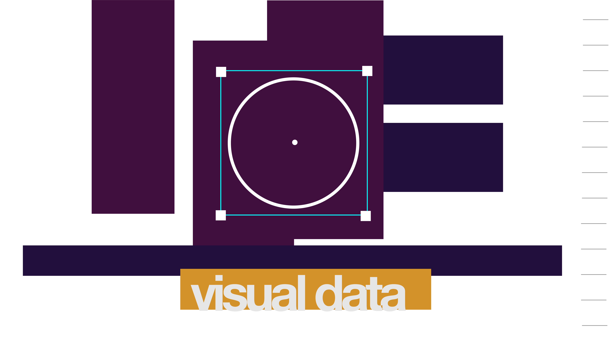

"Visual Data"
Storytelling Perspective
When there is a story to be told with data, I start with representation. I play with how variables in the dataset are normally represented and play with other ways it could be represented. I attempt to simplify as much as possible. From there, I play with how behaviors can reiterate the message being communicated.
